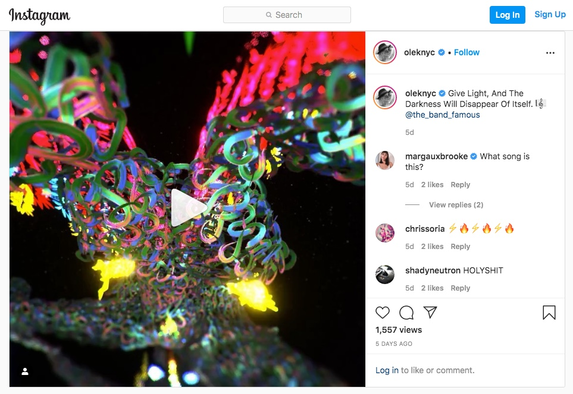
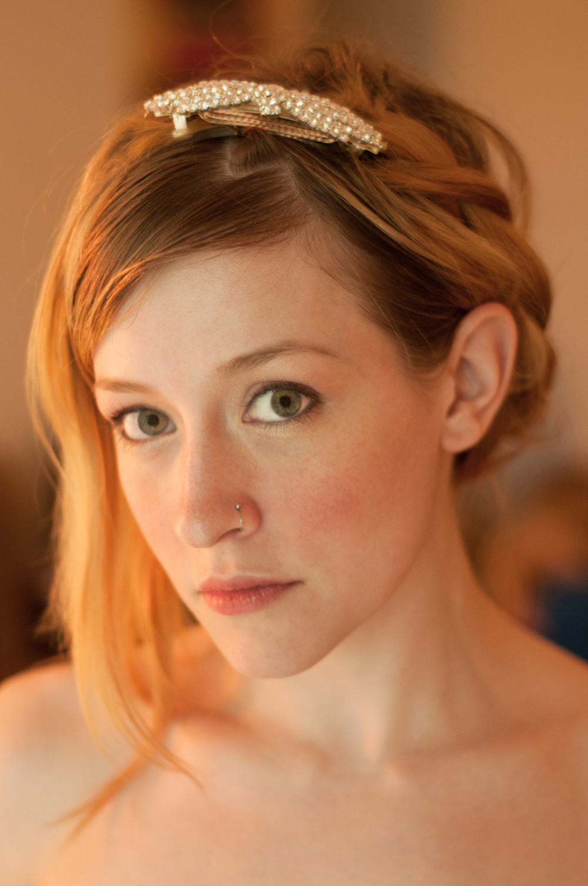

bio
Mary Norell Jackson
Short Bio:
Mary Norell Jackson, known professionally as Norell, is an independent singer-songwriter whose music has reached audiences across multiple countries worldwide. A lifelong vocalist and multi-instrumentalist, she writes and performs original music that blends emotional storytelling with empowering themes. As the creative force behind The Band Famous, her work has received international radio play, been featured in art exhibitions, and earned support from artists including Tom Green, Dawn Robinson, and B. J. Thomas.
Full Biography:
Before she ever entered kindergarten, Norell already knew what she wanted to be when she grew up. She was born to sing.

Born Mary Norell Jackson on September 25, Norell is an independent singer-songwriter whose lifelong devotion to music has carried her from small-town beginnings to international radio play and recognition from some of the very artists she grew up admiring.

A multi-instrumentalist as well as a vocalist, Norell studied piano Suzuki-style as a child and later trained in violin, flute, guitar, and piano. By seventh grade she had already been hired to perform professionally as a flutist in the Ashland, Wisconsin City Band. Throughout her youth she remained deeply involved in choir, even participating in advanced vocal programs such as “Circle the State” during a year living in Indiana. Despite her many musical pursuits, her voice has always remained her primary instrument.

Norell has been writing her own music since her early years and performed her first original song, “Adaptation,” completely a cappella before a live audience in Minneapolis in 2012. Her music would go on to reach listeners around the world through releases connected to the independent project The Band Famous, where she served as singer, lyricist, and co-producer.

Her singles have received international radio play across multiple countries including the United States, Canada, Mexico, Italy, Portugal, Spain, Brazil, and beyond. Among them, “Champion Mindset” gained widespread global rotation, while “Mermaid Energy,” from the To Be Frank EP, received radio play and reviews in Brazil.

Norell’s music has also crossed into the visual arts world. Her song “Escape,” from the debut album Last Words, was featured in internationally recognized artist Olek’s virtual reality exhibition in New York City. Meanwhile, the self-produced music video for her single “Emotional Scatter” from the Awakening EP was featured and reviewed by City Pages in Minneapolis and later shared online by comedian and actor Tom Green.

Her creative journey has brought her through New York City, where she modeled for celebrity hairstylist Ted Gibson, auditioned for The Voice, and continued building her artistic network. During this time, Atmosphere of Rhymesayers Entertainment showed support by personally sharing The Band Famous’ Kickstarter campaign to expand the band’s pioneering iPhone music app to Android.

Norell’s work has been featured in international radio interviews as well, including appearances on WeekOnLaRadio, a program broadcast across New York, Mexico, Argentina, and the Dominican Republic. Her artistic presence has extended beyond music into the visual arts community as well. Painter Suzann Beck created an oil portrait of Norell that was displayed at a gallery exhibition near the Walker Art Center in 2015.

Throughout her career, Norell has remained fiercely independent. She has respectfully declined multiple record label offers in order to retain full creative control over her music and message. For Norell, authenticity and artistic freedom are non-negotiable.

In 2012, she graduated near the top of her class from the University of Minnesota with a Bachelor of Arts in Communications. She immediately dedicated herself fully to her artistic path, applying the same determination and faith to her music that had carried her through her academic achievements.

Over the years, Norell has received encouragement and praise from artists she admired growing up, including Tom Green, Dawn Robinson, and Grammy-winning vocalist B. J. Thomas, among others.

For Norell, music has always been more than entertainment — it is a lifeline, a source of healing, and a means of connection.
She hopes that listeners who encounter her songs will feel less alone than they did before hearing them.
Music has always been a lifeline for me when I needed one most. My hope is that the music I create can give back in the same way music has given to me. If someone somewhere hears a song I wrote and feels less alone, then I know I’m doing what I was meant to do. I aspire to inspire, uplift, and awaken something meaningful within the listener.- Norell

Through her voice, songwriting, and unwavering independence, Mary Norell Jackson continues to create music meant not only to be heard — but to heal, inspire, and empower.

Select Press & Exhibitions:


Norell transcends her pain into power, viewing song-writing as a personal form of alchemy. "This isn't new to me. This is practiced alchemy."